The most common application of neural networks taught to beginners in the field is of handwritten digits recognition by using MNIST dataset. You could simply use a popular deep learning framework like Tensorflow or PyTorch and code up a recognizer in like 2-3 minutes but do you understand what happens inside the model. How just supplying some matrices/tensors to a model it acquires this ability to recognize handwritten digits? Let’s find out.
Note: I myself have learnt about this subject from Michael Nielson’s excellent book and Andrew Ng’s deep learning specialization. I feel that Michael’s implementation of Feedforward net is excellent because it generalizes perfectly well compared to some other implementations of neural nets you’ll find on the internet. And I have used his approach in this code too.
We are going to use MNIST dataset available on Kaggle. Let’s take a look at the dataset.
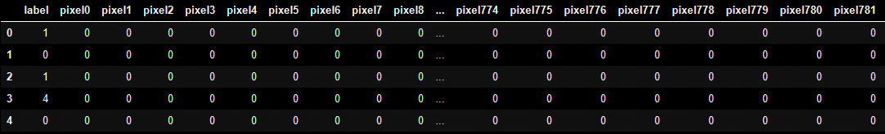
The images are stored in form of rows with 785 columns each. The first column is the label of that image where as next 784 subsequent columns represent the values of the pixels of grayscale image from 0 to 255 which has been flattened out from (28*28) to (784*1).
Initially, the net which we are going to create will have 3 layers i.e. an input layer, a hidden layer and an output layer. Input layer is going to have 784 neurons, hidden layer will have, let’s say 30 neurons and output layer will have 10 neurons each representing a particular digit from 0 to 9.
So, we are going to create a Network class in which we’ll input the number of layers and number of neurons in each layer. Network class will have a constructor which will initialize random weights and biases to all the neurons of our network.
Why it’s important to randomly initialize the weights and biases? Weights and biases cannot be simply initialized to say like 0 because then in the output layer, the influence of all the neurons will be same and our neural net will be utter trash. For knowing why this happens you’ll have to follow along.
So in our considered case of a neural net with 1 hidden layer with 30 neurons, our object will be [784, 30, 10]. So for a neural net as such, what will be the weights and biases?
There will be two weight matrices here (w1) and (w2). (w1) will represent set of weights between 1st and 2nd layer of neural network and the dimension of (w1) will be equal to (dim of layer 2, dim of layer 1) i.e. (30,784). Similarly (w2) will represent the sets of weights between 2nd and 3rd layer and its dimensions will be equal to (10, 30).
And similarly we’ll initialize the biases too. The biases are defined for every layer except the input layer. So the biases (b1) and (b2) defined for layers 2nd and 3rd respectively, will have their dimensions (30, 1) and (10,1). And now we are done with the initialization part.
Now, let’s define the Feedforward function. What this function very intelligently does is do the forward pass with minimal effort.
Now comes the real deal, the Gradient Descent function. We are going to implement a mini-batch gradient descent. Mini batch gradient descent can be changed into work as Batch Gradient Descent if we choose the batch size as m (number of training examples) or Stochastic Gradient Descent if we choose the batch size as 1.
Note, here we are actually going to implement Stochastic Gradient Descent but I chose to do it through mini-batch gradient descent because that’s a more general approach. We can alter the batch size as we wish.
And now we'll implement the Backpropagation Function and this where all the magic happens. Backpropagation uses Caculus's chain rule as an inspiration to find the delta values for each neuron and bias in the model at a particular time. Understanding backprop can be difficult and humbling, so don't panic if you don't fully understand it at once. I recommend you watch these 4 videos in the Neural Networks playlist of 3Blue1Brown on youtube, and suscribe to him because he's awesome.
For now we are going to use a simple cost function i.e. a Mean-Square-Error function which just makes our model work reasonably well and later on we'll use a more complex function like a cross-entropy-function. So here's our Mean Square Error (MSE) cost function:
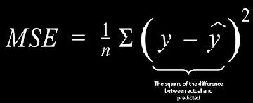
So the cost function can be written as the function of output of our neural network as,
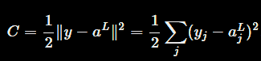
Backpropagation is about understanding how changing the weights and biases in a network changes the cost function. Ultimately this means computing the following partial derivatives.
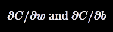
These partial derivatives means that, How the cost function will change if we change the weights and biases of particular neuron/neurons. But to compute these partial derivatives we'll first introduce an intermediate quantity 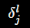 , delta. Delta can be understood as the error in the j'th neuron of the l'th layer.
So what backpropagation does is gives us a way of calculating delta and later provide us a way to compute the required partial derivatives through delta. So basically, we have 4 equations of backpropagation and one by one we are going to look into each one of them.
Equation 1
Delta was defined as the error of a particular neuron, so
Applying the chain rule, we can re-express the partial derivative above in terms of partial derivatives with respect to the output activations,
But we know that , so the second term on the right in the above equation can be written as and here sigma represents the sigmoid function which we are using as the activation function here. And hence our first equation is going to be,
Note, the above equation involves of two things, i.e the derivative of the cost function with respect to the activation of a neuron and thederivative of the sigmoid function.
Derivative of the MSE cost function which we have choosed with respect to the activation of a neuron is going to be equal to,
And the derivative of the sigmoid function with the help of some basic derivation and algebra it can be proved that derivative of sigmoid function is,
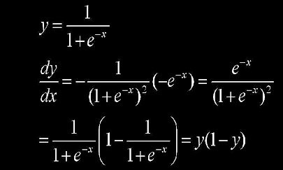
So the vectorized implementation of the Equation 1 is going to be,
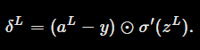
Equation 2
Now we'll like to have an equation which will relate error to error in the next layer 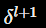. We can use chain rule to do that.
Now we have a equation which relates to . And now we want to get rid of the partial derivatives term in the equation.
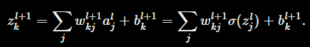
Differentiating, we obtain
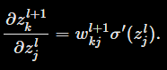
Now substitutingg these partial derivatives back into the main equation, we obtain
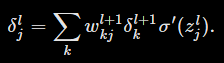
Vectorized implementation of this equation will be,
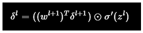
Equation 3
Till now we have figured out an intermediate quantity called delta and have found an equation to relate change in cost with delta. We have also found an equation which relates delta(l) with delta(l+1). Now we need equations which will relate bias and weights with delta.
Well as it turns out,
In vectorized form,